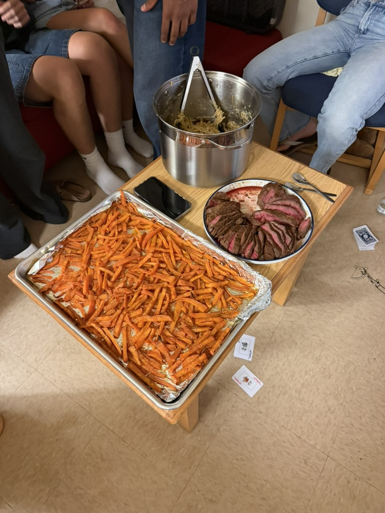

I have made various different foods for myself in my kitchen, here in PCV. Above is an image of steak and sweet potato fries from scratch.
Culinary Explorations in PCV
October 14, 2025
Above is some everything bagel avocado toast I made for breakfast, topped with a fried egg and bacon.